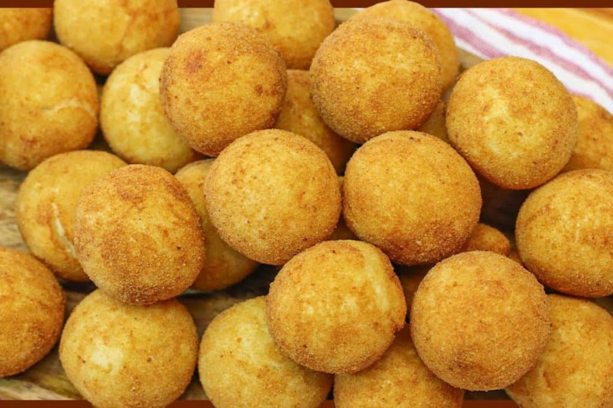

Conheça a minha história
Olá, meu nome é Tamires e estou a 17 anos trabalhando na aréa da confeitaria.
Nasci em Escada, cidade localizada em Pernambuco, foi na minha terra natal que me apaioxonei pela aréa, através da convivência com minha ex-cunhada, que já atuava profissionalmente na área.
Sempre tive interesse em aprender cada vez mais sobre essa área.
Com o passar do tempo, a confeitaria deixou de ser apenas um interesse e se tornou uma verdadeira paixão. Mesmo sem realizar cursos profissionalizantes, eu desenvolvi minhas habilidades através da prática, da experiência e da dedicação constante ao meu trabalho.
Fui aprimorando minhas técnicas e conquistando experiência na produção de bolos, doces e salgados para diferentes ocasiões. trabalho passou a ser reconhecido pela dedicação, pelo cuidado nos detalhes e pelo carinho presente em cada produção.
Conheça o meu trabalho


